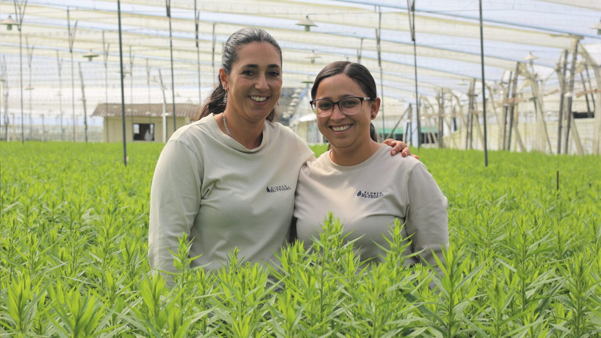
IdentificarReconocer y registrar a las personas autorizadas.
Feria de la ciencia · Flores El Trigal
Conectamos tecnología, conocimiento y bienestar
Proyecto de innovación tecnológica para Flores El Trigal.
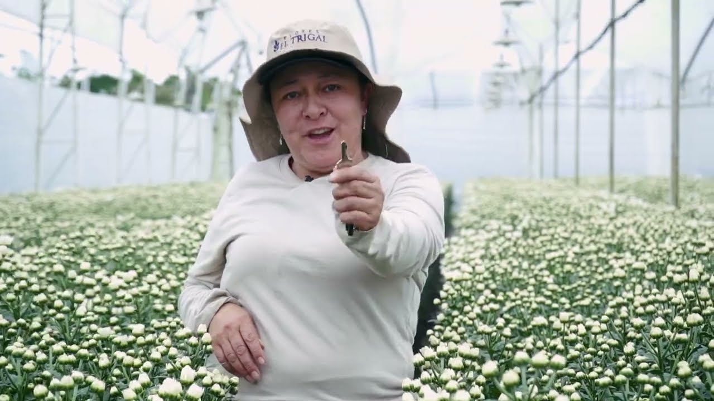
Camilo

IdentificarReconocer y registrar a las personas autorizadas.
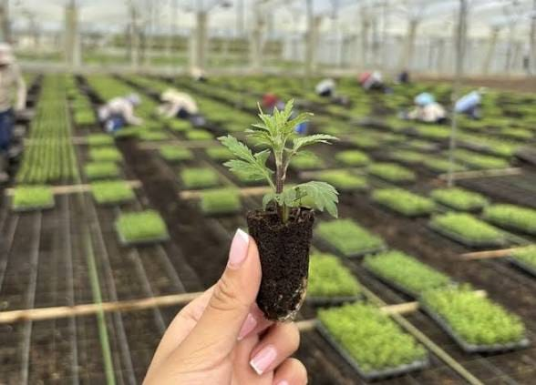
AprenderRecorrer los procedimientos y comprobar lo aprendido.
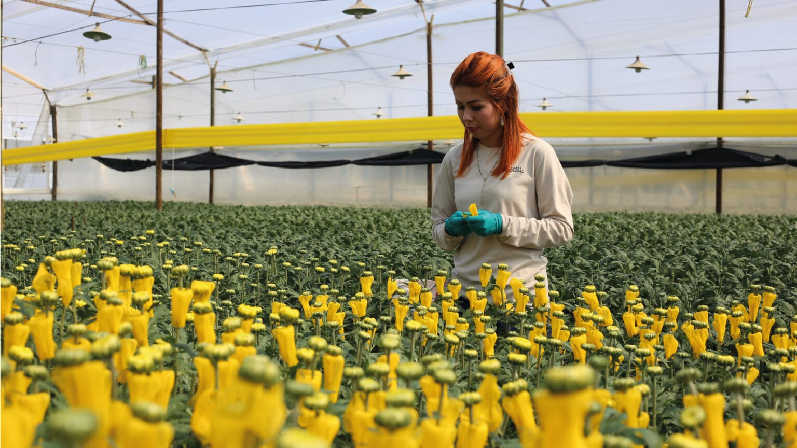
PrevenirAvisar cuando una postura de trabajo no conviene.
Ada
Identificación, formación y prevención en una sola plataforma.
Identifica y registra.
Capacita y evalúa.
Detecta y avisa.
Ada · recorrido propuesto
La persona entra a NEXFLOR.
El rostro puede reconocerla.
Recorre los cursos.
Comprueba lo aprendido.
La cámara puede avisar la postura.
La capacitación y el monitoreo de postura son funciones distintas. El diagrama muestra el flujo propuesto dentro de NEXFLOR.
Lopera
Identificación inteligente de personas autorizadas.
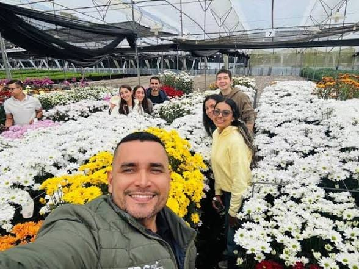
El reconocimiento facial propone reconocer a la persona.
Deja constancia de quién está autorizado, sin depender solo del papel.
La idea es saber quién puede usar el sistema. Los datos del rostro son sensibles y exigen permiso y privacidad.
Lopera
Aprender los procedimientos y comprobarlos jugando.
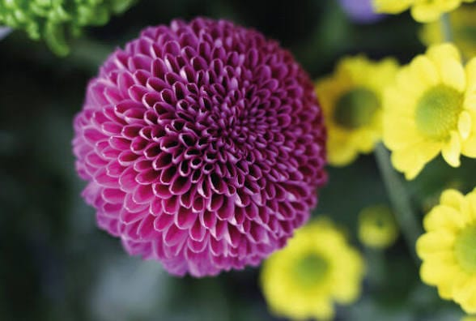
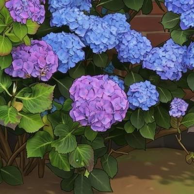
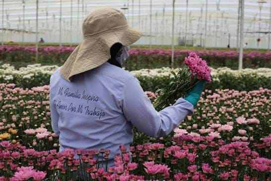
Emi
Tecnología para la prevención, no un reemplazo del personal de salud.
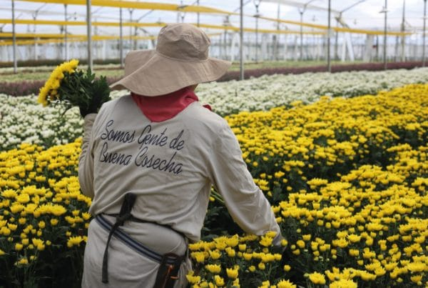
Una cámara y el análisis de imagen pueden marcar ciertas posturas inadecuadas.
El aviso llama la atención de quien está trabajando.
Apoya hábitos más seguros. Complementa la seguridad y salud en el trabajo. No promete evitar toda lesión.
Emi
Un registro apoyado en tecnología, no solo en papel.
Cursos, preguntas y un juego para ver qué se comprendió.
Un aviso preventivo durante la labor.
Tres funciones distintas, un solo sistema: NEXFLOR.
Privacidad de los datos personales, manejo seguro de la información y validación de que cada herramienta funcione como se espera.
Flores El Trigal
Conectamos tecnología, conocimiento y bienestar
Una sola plataforma, tres funciones, un propósito: trabajar mejor.
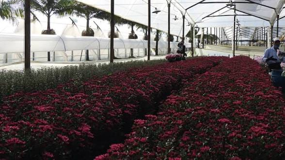
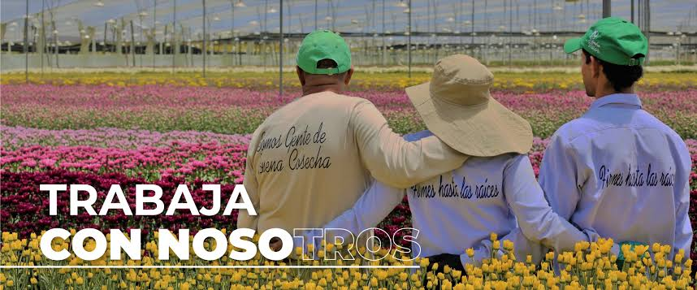
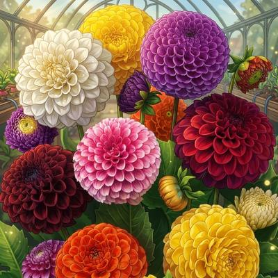